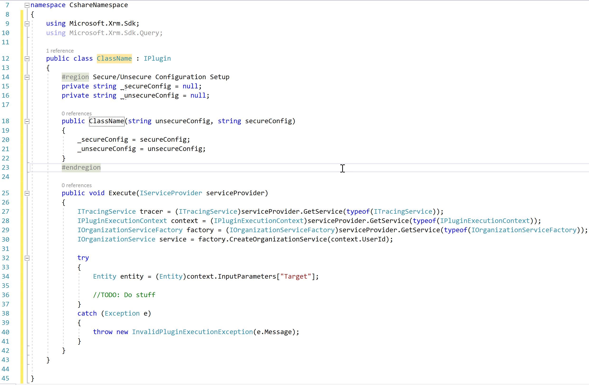

Coding for Dynamcis CRM using Visual Studio Snippet
Dynamics CRM using Visual Studio Extension enables us to create a class for the plugin, custom activity, and console application easily. We can add all the required and commonly used functions and variables in no time.
Add code in class for
- Plugins
- Custom Workflow
- Console application
Using Code Snippets
Crate a plugin, custom workflow or console app using Visual Studio:
-
Remove all the code except "namespace".
-
Write crmconsoleapp, crmplugin or crmworkflow and press doubble tab.
-
Function with required code will be added to the class.

The plugin class name will be autoselected. Just give the name of the class and press the “Enter” key. The name of the constructor will be also be replaced with the name of the class automatically.
The same process will be applied for the console app class and custom workflow class. In addition, the code activity class will also contain input and output parameters.